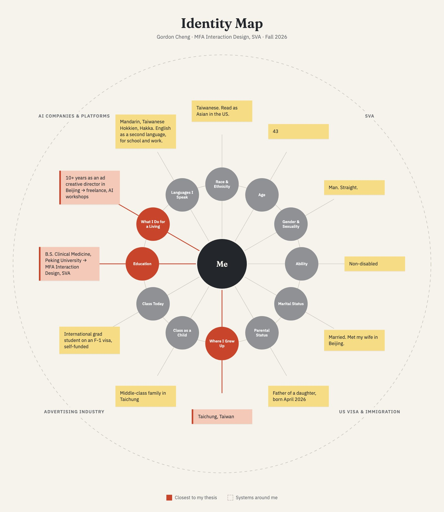
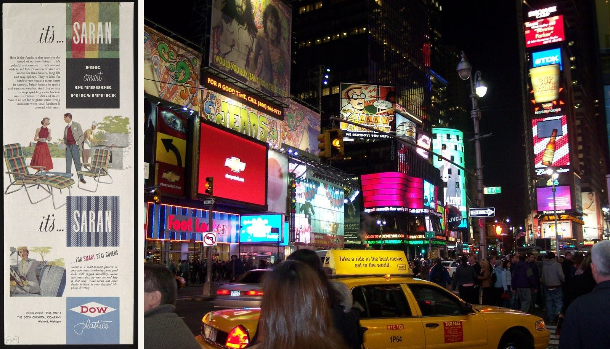
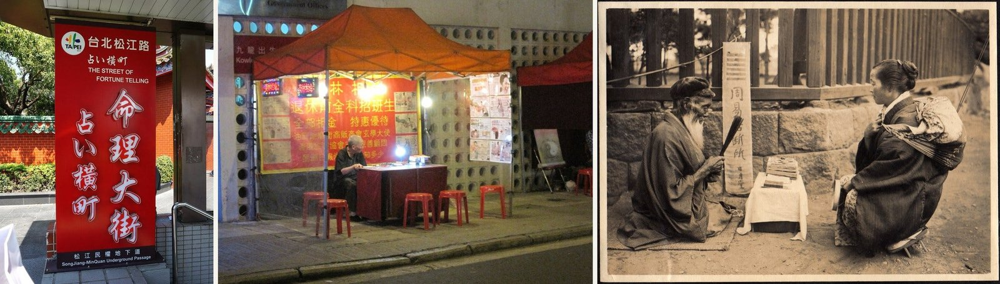
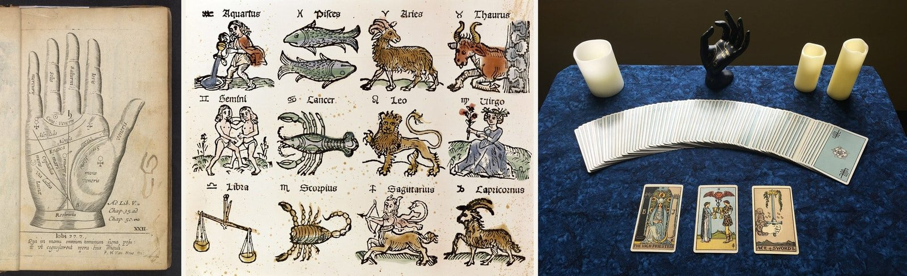
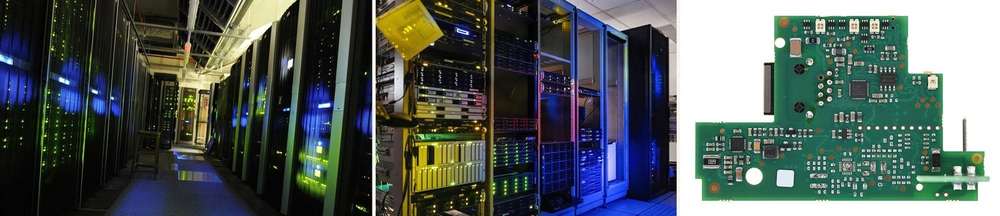
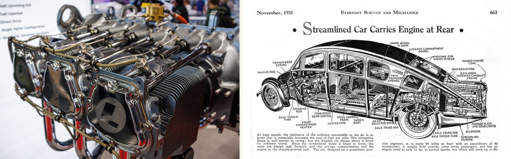

The Asker and the Persuader

Where I stand
My thesis asks why people use AI to tell their fortune. Underneath that, I want to ask how the system prompts behind these products are designed, and how that craving for an answer, when things are uncertain, connects to fortune-telling itself.
There are two kinds of people in this topic: the ones who ask, and the ones who build the answer. I stand on both sides. I am someone who looks for answers when things are uncertain. And in my years in advertising, I was also someone who designed prompts every day, hoping people would believe me. Whether it was cars or luxury, the work was to create a longing for a way of life. That longing is a kind of prompt too.

When I’m uncertain, the first person I think of is my therapist. But my therapist’s job isn’t to give me answers. They listen and give me feedback, and inside that feedback I end up persuading myself. I also talk with friends, but that only goes so far, because friends rarely give answers that are sharp or confrontational. And yes, I have asked fortune-tellers too, though not many times.

Privileges and constraints
My advantage is that I have a feel for how system prompts work. Some of the experts I’m reaching out to study exactly this, and I also know people who build AI fortune-telling products, who have shared their views with me. I’m curious about both AI and fortune-telling. And I spent years in advertising, persuading people for a living, so I know something about how people get convinced.
What really limits me is my own culture. I know something about fortune-telling in Asian cultures, much less about Western traditions. And fortune-telling is a wide world: astrology, the zodiac, palm reading. Even AI fortune-telling alone is wide. My real constraint is narrowing it down.

How this shapes my approach
When I see someone ask AI to tell their fortune, my first reaction is curiosity, with a little criticism in it. Fortune-telling is already metaphysics. AI, to my gut, is a rational tool. It reasons over what humans already know. Fortune-telling comes from somewhere, or from nowhere; its answer is unknowable. So why put the two together? What are people thinking when they do? Why not just ask the LLM directly, instead of grafting on the shell of fortune-telling?

I want to hear from users, from fortune-tellers, and from the people who design these system prompts. I’m also curious about AI coaches and AI therapy. Same move: give the AI an identity, then let it answer people’s questions about their choices.
Showing people how they get persuaded is one part of it. What comes more naturally to me is looking for the need underneath. Everyone faces uncertainty at some stage, and when people face the unknown, they show a kind of vulnerability. I think this is about my own life right now, too. My career, geopolitics, almost everything feels unknown. How does one person cope with that? And does turning to AI and fortune-telling reflect an anxiety of our time?
The tension I’m carrying
I try to face this openly. I often say that using AI is like driving a car. You don’t need to know how the engine works to get from A to B. But if you understand a few fundamentals, you have more composure when something goes wrong, an accident or a breakdown. I think the same is true of AI’s answers.

We are going to rely on LLMs more and more for decisions and advice. Through this research, and through design, I want to rethink the relationship between three things: the uncertainty each of us faces, AI, and ourselves. It doesn’t have to be a balance. I just want a clearer sense of how they relate. The question I’m not ready to answer, and want to keep carrying: as LLMs move deeper into our everyday decisions, how do we use and understand them better? AI fortune-telling is my narrow way into that question.
Who I’m talking to
This week I made a list of people, many of them in industry, who I hope can tell me how they design and think about system prompts. That’s where I expect this research to go deepest.